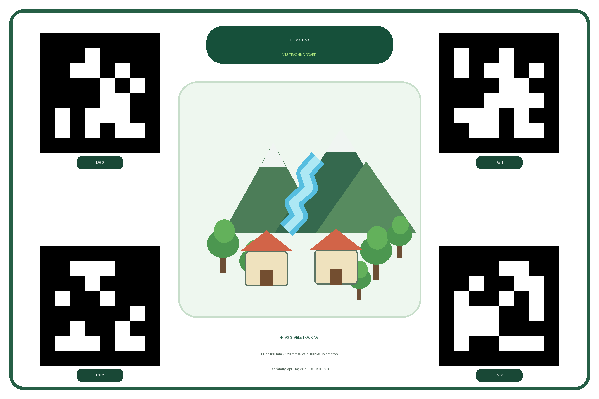

Cetak dengan Scale 100%. Jangan gunakan “Fit to page”. Ukuran board harus 180 × 120 mm agar estimasi pose dan ukuran AR konsisten.

Empat tag digunakan sebagai satu board. Sistem dapat mempertahankan orientasi lebih konsisten ketika salah satu tag mulai sulit terlihat.